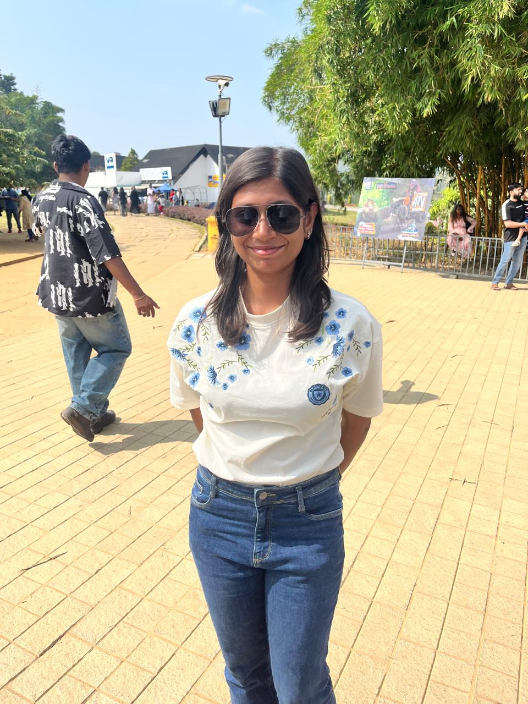
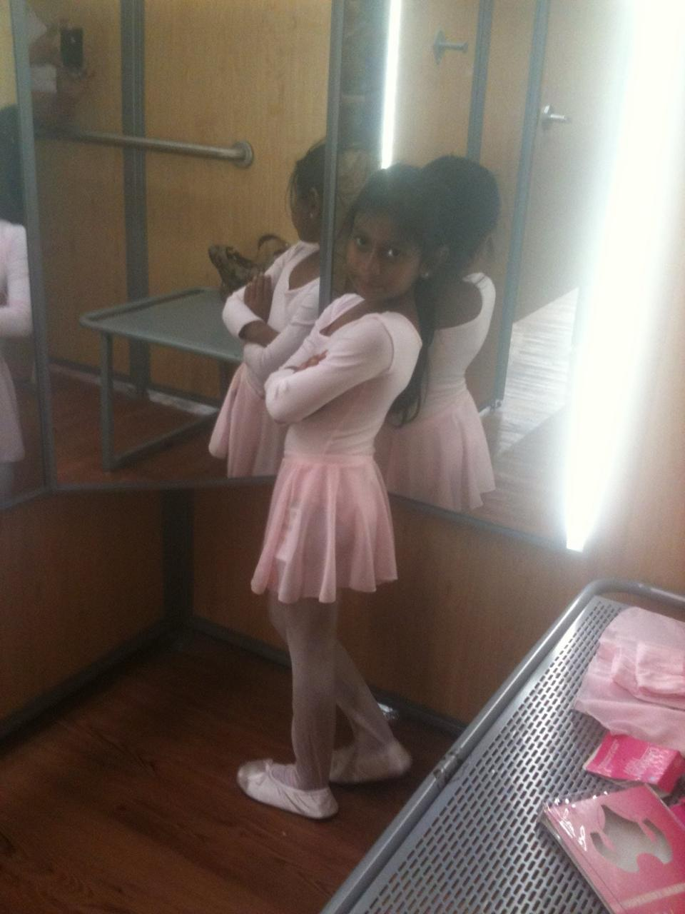
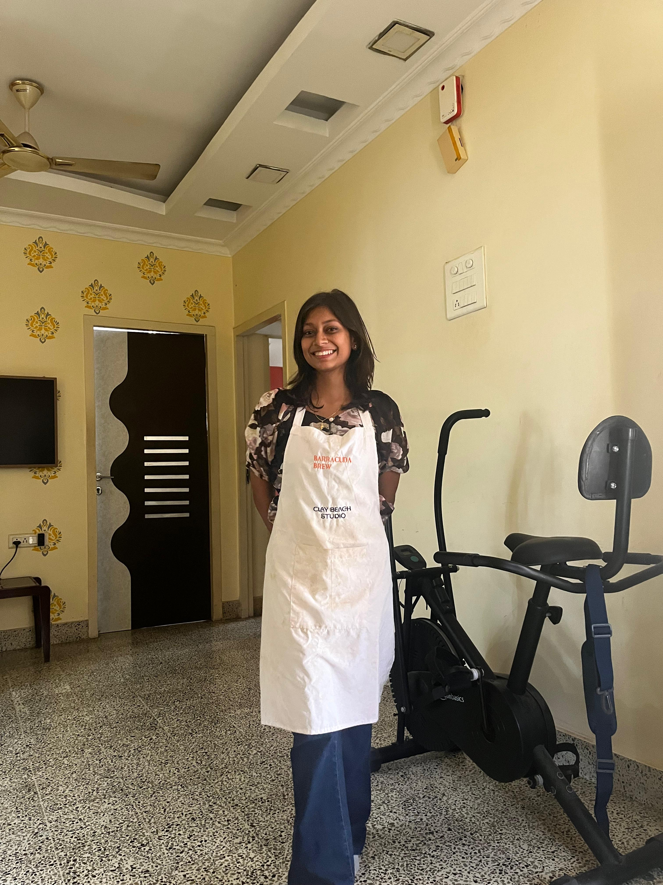
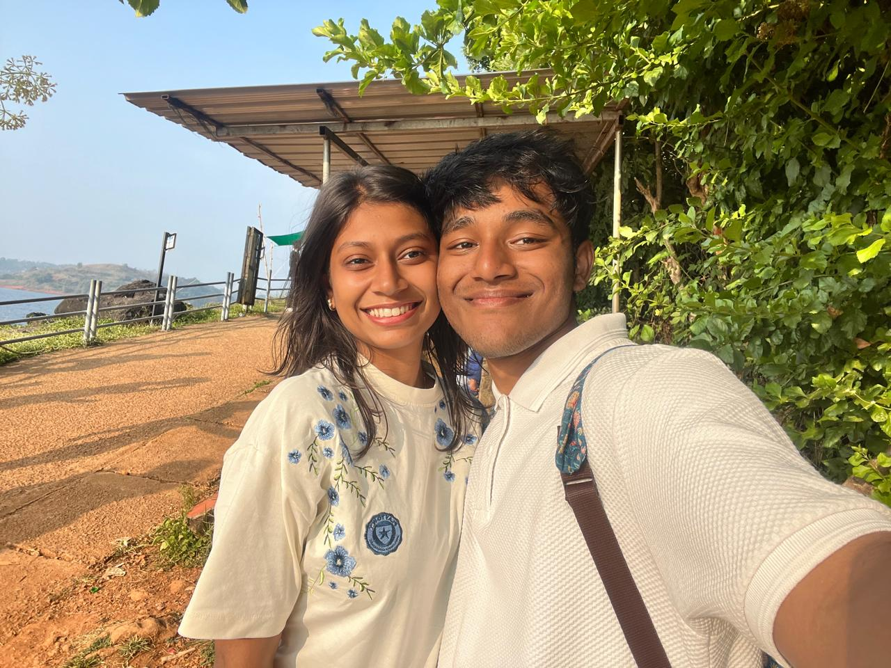
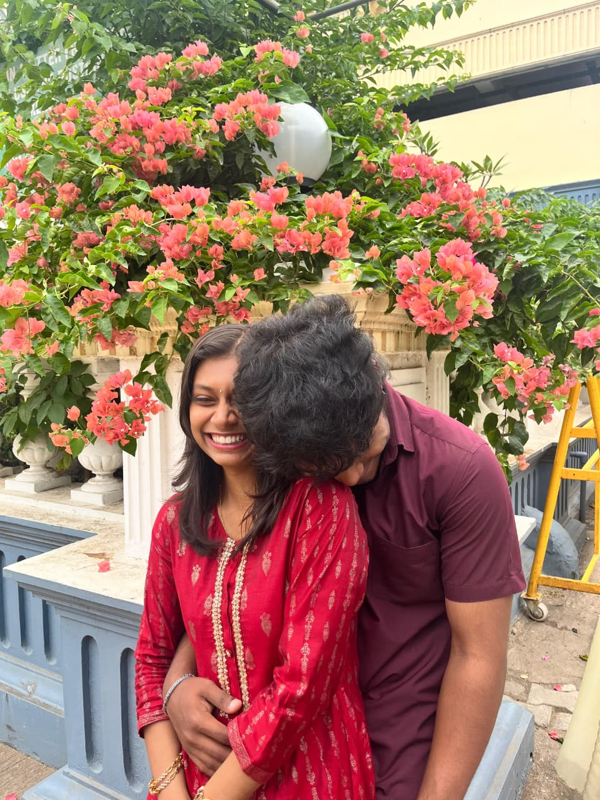

Happy Women's Day, my perfect Ni. Shalini, the one who can never say No to me, even though it means "No" in your language! 😘

Question 1: Are you straightforward, honest, strong with your principles and ideologies, very disciplined?
I love you a lot, Ni. The littlest things you do make me incredibly happy – like your smile, your laugh, or just being around you. I don't really need anything from you; your presence is enough. Thank you for putting up with me, the unplanned, imperfect thing in your perfectly organized life. You're strong, independent, and admirable, and I love you for who you are.
Before me, you were literally perfection — everything on time, everything in place. Then I came along… the only chaotic, imperfect part of your life. And somehow, you still choose to deal with me every day. Thank you for putting up with me, Ni. ❤️


I don’t need anything from you… except maybe more of your smiles, more late-night talks, more of you stealing my hoodies, more cinnamon roll mornings together.
Question 2: Are you strong in communication, responsible, admirable, bold, and do you never back down?
You're straightforward, honest, disciplined, proud in the most adorable way, and you put in effort even when others don't. You don't show your weak side, but I love you for whatever you are. The littlest things from you make me wanna cry with happiness.


I LOVE YOU LOADS ❤️❤️❤️
Thank you for never saying No to me… even when I probably deserve it sometimes 😅 You make every single day better. Here's to more strawberries, more cinnamon rolls, and more us. 🥐🍓
Ni, I like you for whatever you are. You take control of my body just by existing; I lose my shit just being around you. I'm grateful to you in so many ways. You're my first for everything – my first real love, my first to feel this deeply. For me, you're the person I didn't "date" first, but my first in everything. I've known you for 2.5 years, liked you for exactly 1 year, and we've been in a relationship for 6 months. This is the first time I truly feel things; I realize how important someone's presence is. Your cake for my Valentine's, your letter – small things from you make me go mad. I don't expect anything, but even the tiniest thing makes me wanna cry. I usually cry once a year, but since you came into my life, I've been more open to my feelings. I like talking to you, I just wanna be with you, I just wanna stare at you… that's all.
Forever your biggest fan,
Arjun